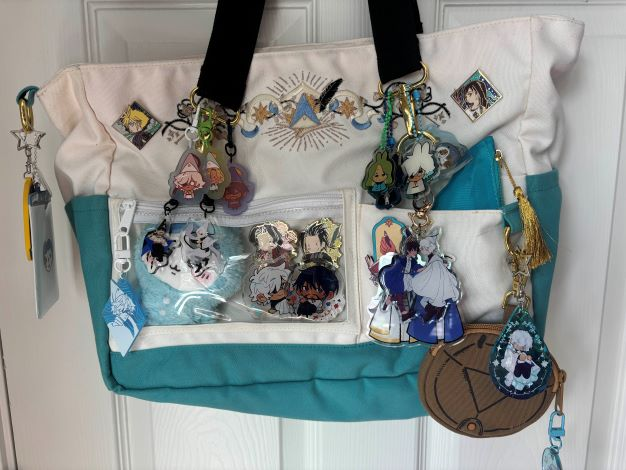
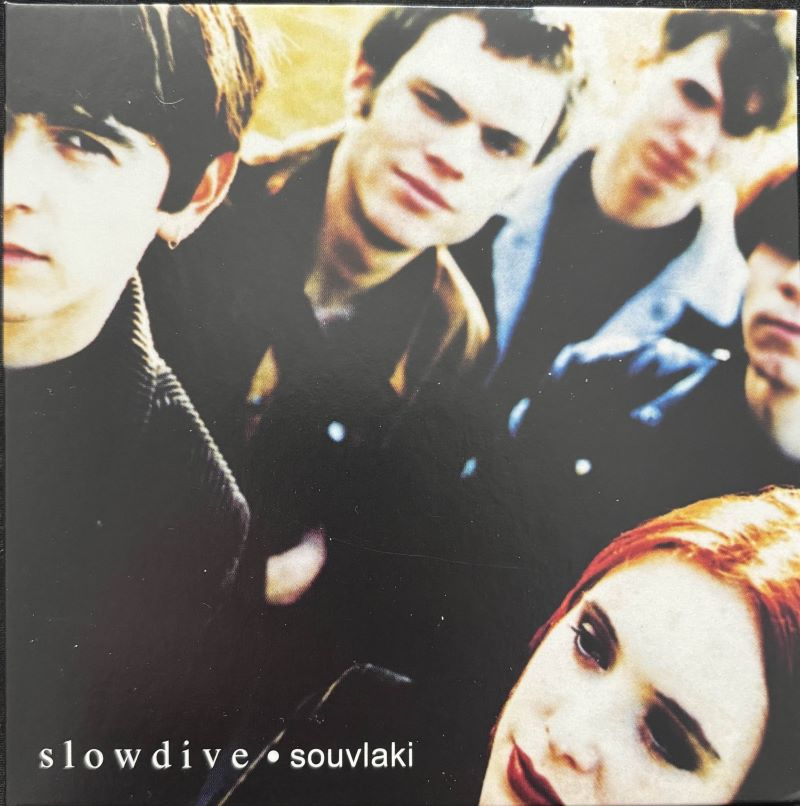

Mac’s Passion for Collecting
When I was a kid, I was obsessed with Pokémon cards and that was the first thing I started collecting! It was starting to get popular and me and my friends started trading at recess in elementary school! Sadly, the school decided to ban the cards shortly after we started. Also, one of my friends decided to steal my best cards but that didn't stop my passion for collecting! Now more recently, I collect Stickers, CD’s and other physical media such as DVD’s and Video games.
Why I collect:
Personally, I get a lot of the things I collect in thrift stores and local stores for my physical media. Some other things I collect that are fan made or merch from shows I buy second hand from either Mercari, Etsy or artists personal websites!


Reasons:
The reasons I collect really depend on the items. I collect my physical media due to streaming services and media not being available any other way. My fan merch I like to collect to support artists and being able to have merch of shows that don't have official merchandise.
Collected Items
In my collection I have
- 30 Dvds
- 13 box sets
- 37 Physical games
- 34 Manga
- 15 artists prints
- 140+ Stickers
- 50+ keychains and pins
- 10+ figures
- 68 Cds
I don't ever really have a way to show off my collections so making a website for them is the next best thing! I'm also making another website specifically for my sticker collection! (https://mbporter.github.io/Stickers/)
Here are some of my favorite CD’s that are in my collection, I personally dont collect things because they are rare mainly for the music so I cannot comment on the rarity of these. But I have collected them all in person, which is cool to me!

Now Playing
When the Sun Hits
SlowDive